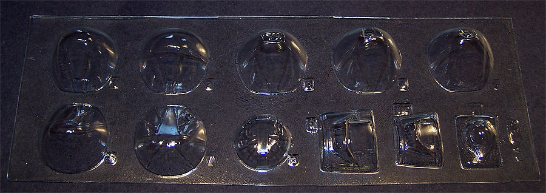

Koster Aero Enterprises Kit #35
1/48 B-17 E/F/G Nose Job
Kit #35 MSRP $18.95
Images and text Copyright © 2011 by Matt Swan

Koster Aero Enterprises Kit #35
1/48 B-17 E/F/G Nose Job
Kit #35 MSRP $18.95
Images and text Copyright © 2011 by Matt Swan
Bill Koster is at it again and this time we are talking Rhinoplasty, Specifically he has done something the scale modeler has been in sore need of for over forty years - a nose job for the venerable Monogram and Revell 1/48 B-17 kits. Those of you who know something of Bill's history already know that he is a master designer of no small renown. He did time working with Monogram creating some of the great models we remember from our early days and even later like the Revell-Monogram Do-217E. Some people may think he was involved with the B-17 project back in the 1970's but he was not. That has not prevented him from improving on those old faithful kits though.

Several years ago Meteor Productions came so very close to releasing a set of clear resin replacement noses for these two kits then the company folded up for personal reasons. Not long after that Lone Star Models in Texas took up the torch but so far has not been able to release a viable nose set. Suddenly Koster has burst onto the scene having quietly worked in conjunction with a modeler in Southern Ohio to master these seven new noses designed to work with either the F or the G kit. Now this is important that you pay close attention to which kit you are working on because there is a slight width difference between the two kits. What Bill has given us in vacuformed clear plastic is one E style nose for use with the B-17F, four different gun arraignments for the B-17F with some cheek gun options and a new astrodome and three nose options for the G; Douglas, Boeing and Lockheed-Vega. Also included is a correct top gun glazing for the standard F model.
We're not done yet guys, in addition to these really nice vacuformed pieces that display great clarity and well defined frame lines we also get a small bag of white metal goodies, here we have four new Browings for the nose along with two ammo feed belts and a set of twin Brownings for the upper turret. Instructions are posted below and include a full sheet of basic installation guidelines and a sheet of gun configuration pictures taken from real aircraft.
You may click on these small images to view larger pictures
If your local hobby shop does not carry the Koster product line you can contact Bill Koster directly and he will be more than happy to get you set up with all the modeling goodies you need.


{kind=link}
{kind=link}
{kind=link}
{kind=link}
{kind=link}